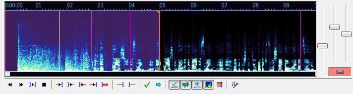

When your audio file has loaded, Aegisub will transform into something like
the screenshot below:

You can click and drag just below the audio timeline to change the height of the audio waveform/spectrum display.
Green and red buttons are toggle buttons. A green background indicates that the option is turned on, while a red background indicates that the option is turned off. The buttons and controls are as follows (many of these have keyboard shortcuts associated with them by default):
When you click on a line in the subtitles grid, Aegisub will highlight it in the audio display and, if you have auto-scrolling enabled, scroll the audio display so it's centered on the line (during normal timing, it's usually a good idea to disable auto-scrolling). You'll notice various vertical lines in the audio display; the pink ones indicate keyframes in the video if you have it loaded (see the Working with video section), the white broken line indicates the currently visible video frame, and the thick red and orange ones are the line start and end markers (respectively) for the current line. To (re-)define the start and end times of the line, you can either left-click to set the start time and right-click to set the end time, or just drag-and-drop the line boundaries. Press the play button (keyboard shortcut s by default) to listen to the selection, or the various other playing buttons to listen to parts of the selection or the audio surrounding it. When you are satisfied with the timing, press commit to save the line and move onto the next one. Then repeat once for every line; it's as simple as that.
Holding shift will make line boundaries snap to other lines and keyframes (or disable snapping if you've set the option to snap by default). Holding ctrl will let you drag multiple overlapping boundaries at once. For example, if you have two lines already snapped to each other but want to shift the transition between the lines back a little, you can select both lines in the grid, then hold ctrl and drag the boundary between them to change both the end time of the first line and the start time of the second line.
Holding alt will make you drag all selected lines (both start and end times).
If you want to finish timing your movie or episode within any reasonable amount of time, there's some things you should note:
One common timing style (preferred by the author of this page) goes something like the following: Turn on "go to next line on commit" but disable auto-committing, auto-scrolling and Medusa timing shortcuts. Keep the four main fingers of your left hand on s/d/f/g. You won't be using the thumb so do whatever you want with it. Keep your right hand on the mouse. Now select (by left- and right-clicking) an area in the waveform that seems likely to contain a line of speech matching the current subtitle line, and hit s to play it back. While it's playing, adjust the start time if necessary. When the playback marker has passed the end time mark, adjust the end time as well. If greater accuracy is needed, play the last 500ms of the selection by pressing d, 500ms before the selection start by pressing q, 500ms after the selection end by pressing w, or the first 500ms of the selection by pressing e. As you grow more experienced, you won't be using anything else than s very much, except maybe d and q. When you're satisfied with the timing, hit g to commit changes and go on to the next line. Scroll the audio display forward by pressing f. If you need to scroll it backwards, use a. To go to next or previous line without committing changes, use z and x.
This style has the advantage that you never need to move your hands at all. With some training, it can also be very fast; audio timing 350-400 lines of dialog to a 25-minute episode can easily be done in less than 40 minutes, and less verbose scripts can sometimes be done faster than real time.
Of course, this style may not feel comfortable for all people; you should experiment with other timing styles before deciding which one is best for you.

When you press the spectrum analyzer button, the waveform does no longer show amplitude (signal strength) on the vertical axis - instead it shows frequency. The higher up, the higher the frequency. The colors instead indicate amplitude, with black/dark blue being silence and white being the strongest sound. This may seem confusing, but since the frequency window is set to fit human voices rather well, it can make it easy to tell where a line (or a word in karaoke mode) starts and ends when there's a lot of background noise (or music) that makes it hard to tell from the normal waveform. It can be especially useful when timing karaoke. Play around with it for a little while, and you'll understand how it works.
Note that in spectrum analyzer mode, the "vertical zoom" slider is redefined to control color intensity instead, since the colors indicate signal strength.
Because calculating the spectrum data is very CPU intensive, it in initially set to be in a medium quality. You can increase the quality of the spectrum in the audio options. This is mostly important when you built Aegisub yourself and did not use FFTW3; FFTW3 is fast enough that the default quality is bumped up a bit.
here be dragons